Case study · innaguba.com
From a pretty portfolio to a website that books families
A research-led redesign for a family photographer and videographer in Brno. The client is my own business, so I had direct access to real clients and owned the result end-to-end.
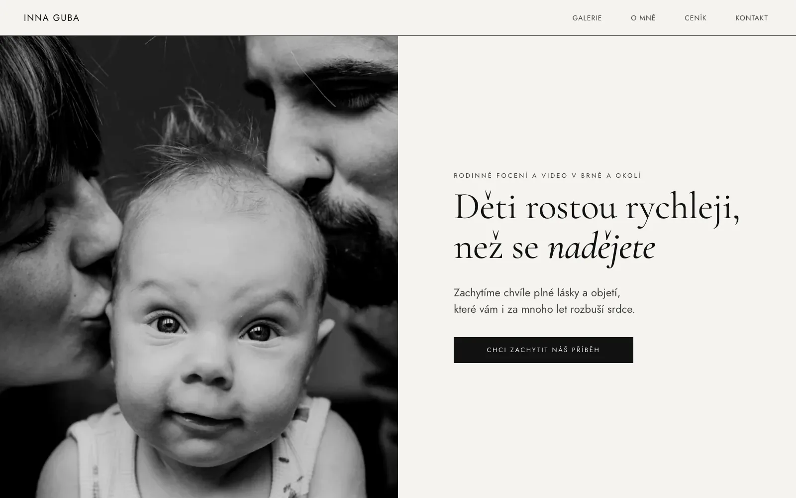
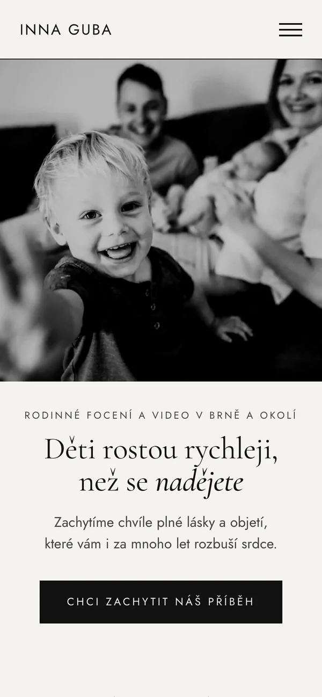
Context
Beautiful work. Almost no enquiries.
I had photographed families in Brno for 12 years, then took a break. On restart, the old website (built on a website builder) had two problems: low traffic, because there was no SEO at all, and almost no enquiries from the people who did visit.
Visitors met full-bleed images, scattered blocks and small, widely spaced text, with no clear place to look first. The site even offered online booking, “Book a date directly in the calendar”, and the calendar brought in no enquiries.
I framed the question before designing anything: is the problem navigation, emotion, friction in booking, or price?
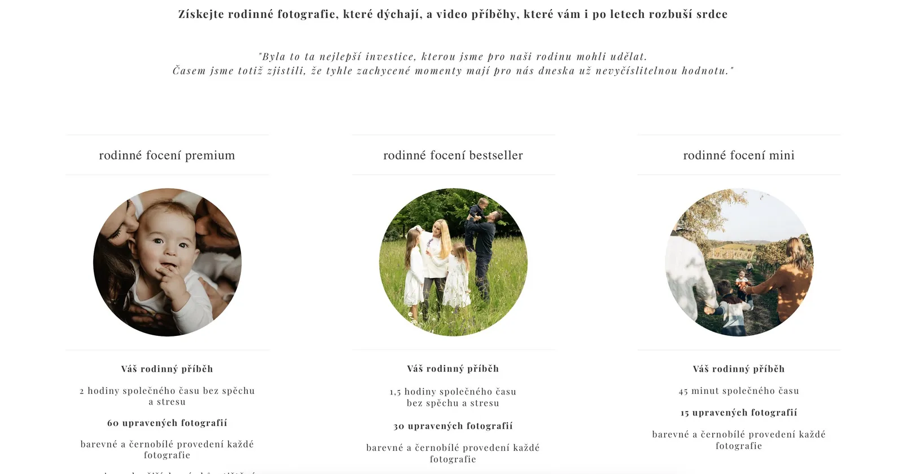
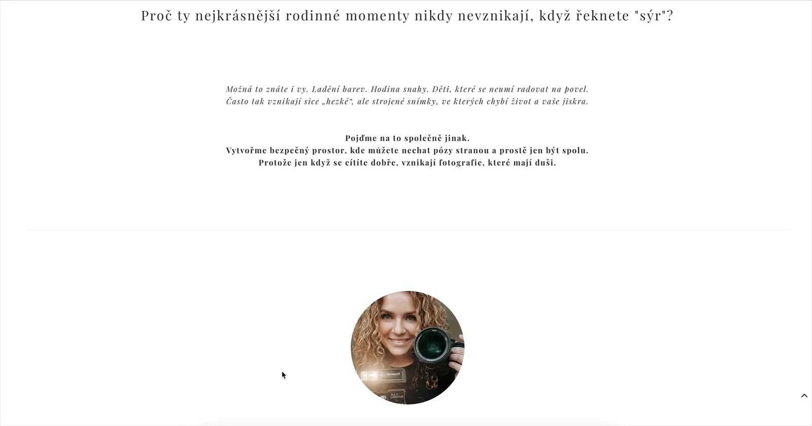
Goal 1
A list of concrete pain points on the current site
Goal 2
One core message that resonates with parents
Goal 3
A homepage that demonstrably leads to action
Goal 4
Long term: more enquiries after launch
Research
Asking parents, not guessing
Three research questions: what makes parents feel “I want this too”? Where is the friction, and when do they leave? Do they understand the difference between photos and a family film, and would they pay more for it?
I ran three in-depth interviews with past and potential clients, walking through the live site, plus an online survey, an analysis of three established local studios, and a benchmark of good and poor mobile flows.
“The photographer rushed us. We left sweaty and stressed, and the photos were stiff.”
P1 · 32, mother of one“The photographer has to be a bit of a psychologist. Once they get nervous, the kids cooperate even less.”
P2 · 40, mother of three“Above all, I don’t want it to feel staged.”
P3 · 39, mother of twoParticipants anonymised; quotes translated from Czech.
The survey agreed, at scale
Biggest fears
The kids won’t cooperate (the dominant fear). Feeling “unphotogenic”. Not knowing how to pose or what to wear.
Deal-breakers
An unpleasant approach, feeling like “just another client”, chaos and disorganisation, hidden fees.
Missing elsewhere
Clear guidance during the shoot: what to do so the result looks natural, not forced.
Most would rather pay more than save and risk a disappointing result.
Insights
The barrier wasn’t price. It was fear.
Fear beats price
Parents worry about their children’s behaviour and the photographer’s patience far more than about cost.
Clarity is trust
Clear prices, a visible process and quick replies say “this person is safe”. A cheap-looking site loses them instantly.
Time, not discounts
Urgency comes from children growing up, so the copy can be honest instead of salesy.
Real over perfect
They want themselves, not a catalogue family. Imperfect is welcome.
Video needs a stage
Family film is highly valued but rarely understood. It needs its own space.
They want to talk first
The child’s age, the family’s schedule, studio or outdoors or at home. It’s an intimate decision.
Who we designed for
Tereza, 35
A working mum of two (2 and 6) who lives just outside Brno. A minimalist with good taste who values fairness, humanity and punctuality. She rejects the “perfect Instagram mum” image, but looks to social media for inspiration, and she wants to capture this chaotic, loving time before the kids grow up.
Frustrations
Staged posing and studio stiffness. Worry that the kids won’t cooperate and her partner will resist. Feeling she “can’t do photos”. Allergic to pushy marketing.
Goals
Stop time while the kids are small. Own a real family album. Finally be in the photos herself.
Competitive gap
Local studios look and sound alike, lean on certificates instead of story, and rarely guide visitors along a clear path. The opportunity: position on safety and relieve stress before the shoot even starts.
Parents who want natural family memories need to trust the photographer before the shoot, because fear of chaos, forced posing and unclear logistics stops them from booking.
| How might we… |
|---|
| …show on the website that “imperfect” kids are welcome? |
| …make the process so clear that getting in touch feels like a small, safe step? |
| …present price as the result of the experience, not a number to compare? |
| …turn the choice of location from a stress into a simple question? |
Ideation
Paper first, then pixels
I mapped the ideal journey by hand, from first impression to enquiry, sketched the homepage, then explored layouts as lo-fi wireframes and an annotated landing page where every section has a job.
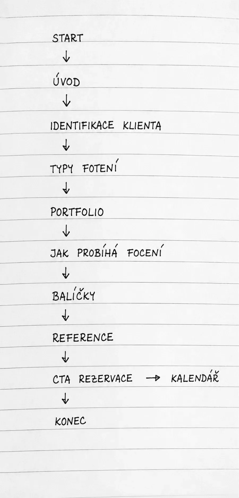
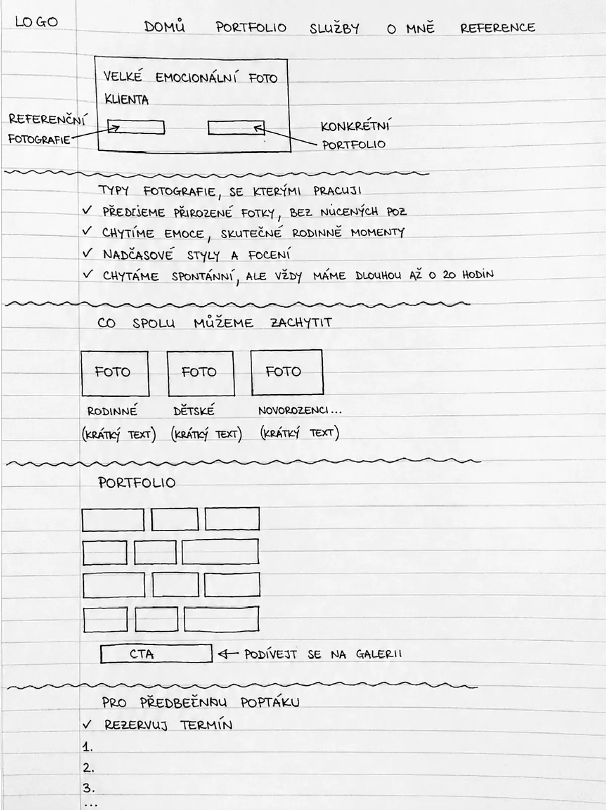
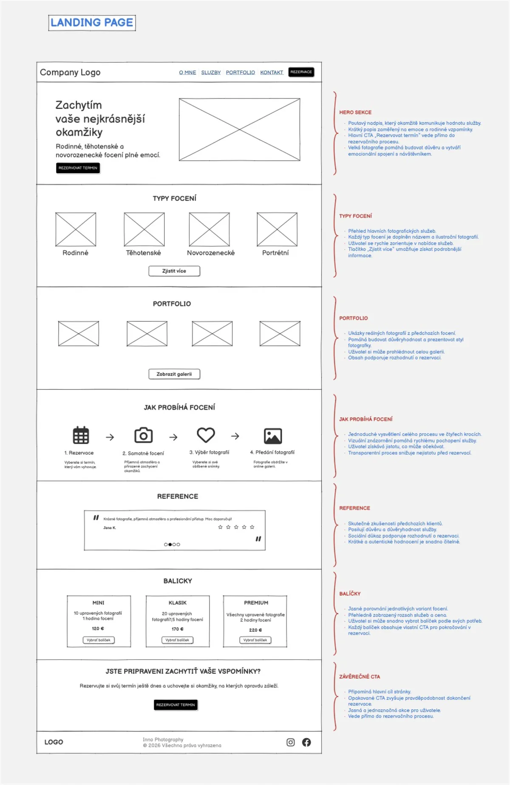
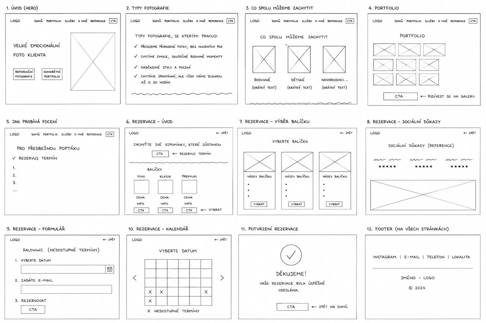
Prototype & testing
Testing the booking flow
A five-step mobile prototype (package, date and time, details, confirmation, email), tested think-aloud with two participants, one in person and one by phone.
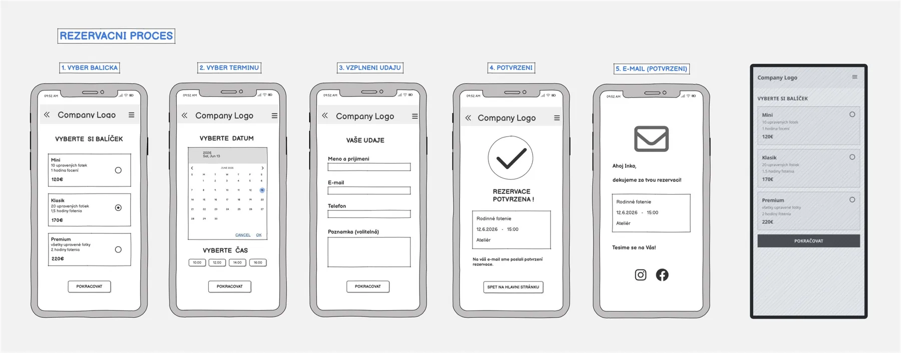
| Finding | Change on the live site |
|---|---|
| “Continue” in step 3 submitted the booking. The participant was surprised it was over. | The final button says exactly what it does: “Send message”. |
| Both participants had to type where they wanted the shoot. | A dedicated “Where would you like the shoot?” field: studio, outdoors, at home, or “advise me”. |
| No way back to the portfolio from inside the flow. | The gallery is always one tap away in the navigation. |
| No “back” between steps. | The multi-step flow became one short form. |
The key decision
Usable isn’t the same as wanted
The booking prototype tested well. But I already had real-world evidence against it: the old website offered exactly this kind of calendar booking, and it brought in no enquiries.
The interviews explained why. A family shoot is intimate. Before committing, a mother wants to talk about the child’s age, the family’s schedule and where to shoot. Picking a slot and simply showing up skips the part that builds trust.
So the calendar became a short enquiry form: what, when, where, and an optional message. Undecided parents get their own path, “I don’t know yet, I need advice”, which hides the date and location fields and turns the form into a simple question.
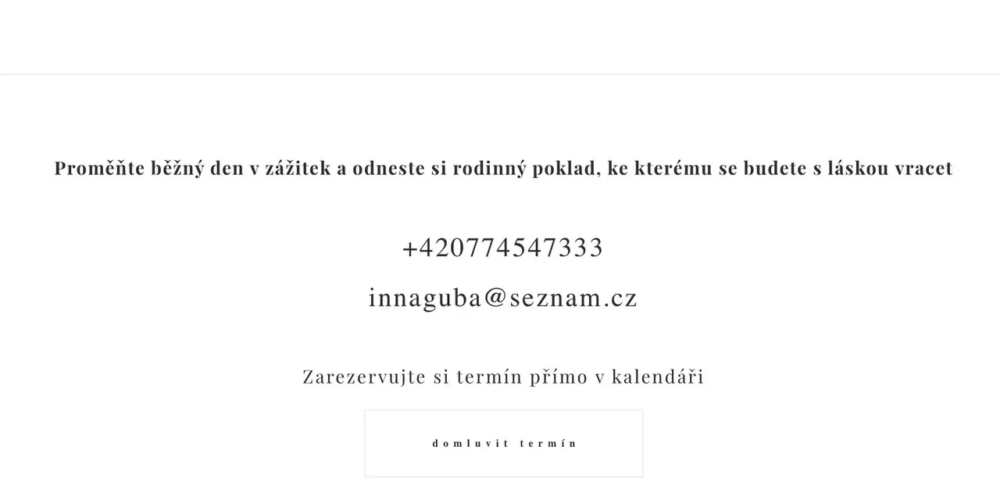
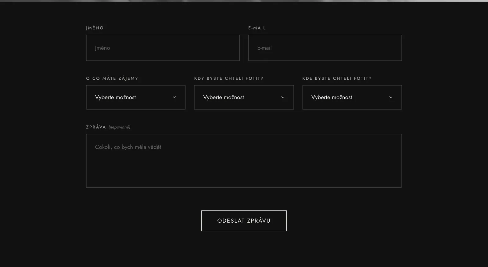
Usability testing showed the steps were clear. Research and real data showed parents didn’t want those steps.
From research to interface
Every section answers a real worry
| What parents told me | What the site does |
|---|---|
| “What if the kids won’t cooperate?” | A whole section answers it head-on: “Afraid the kids won’t cooperate? They don’t have to.” |
| “I don’t want it to feel staged.” | Reportage style and a plain promise: 0% forced smiles. |
| “Kids grow up so fast.” | The page opens with “Kids grow faster than you expect”, beside one emotional video. |
| “I need to know how it will go.” · guidance is missing elsewhere | How it works in four steps: help with what to wear, a guided shoot, delivery. |
| “Unclear pricing puts me off.” | Prices visible on the homepage, full pricing one click away. |
| “Video is priceless to me.” | Family film is a full service with its own gallery. |
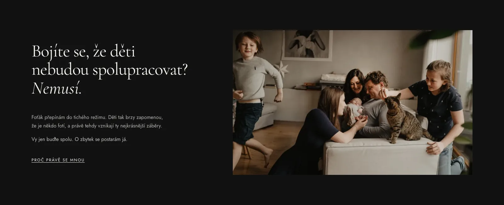
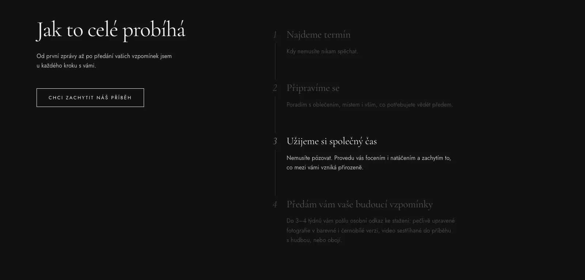
Iteration
Quieter with every round
I designed and built on real content, testing every change on real devices. The hero went from a loud sans-serif “Stop time?” over a collage, through slideshows, to one emotional video and one sentence: you watch, then you read.
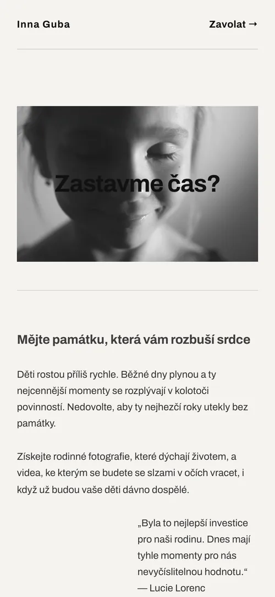
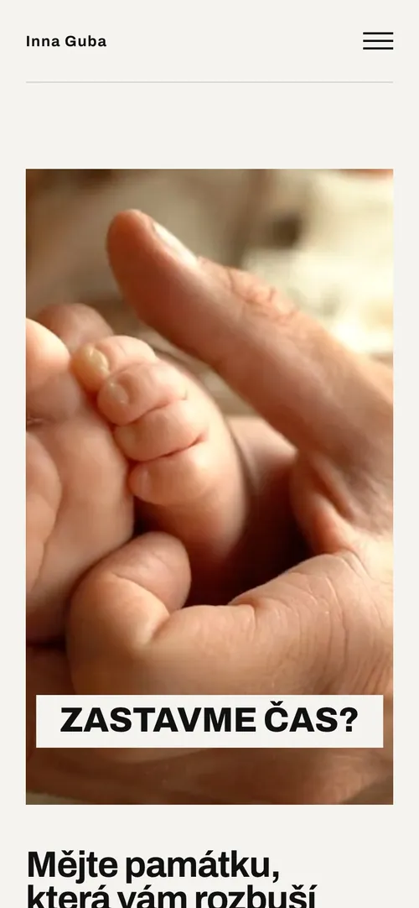
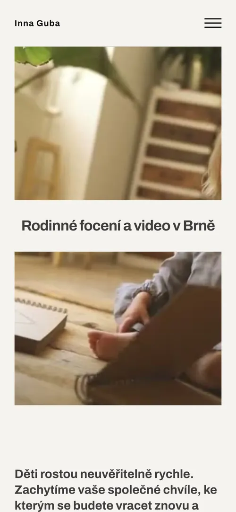
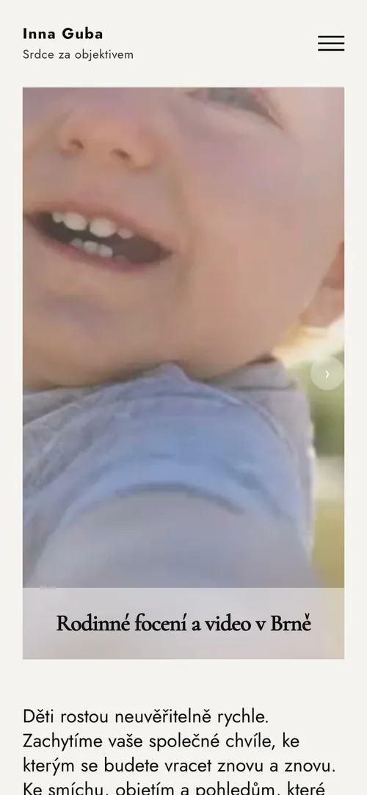
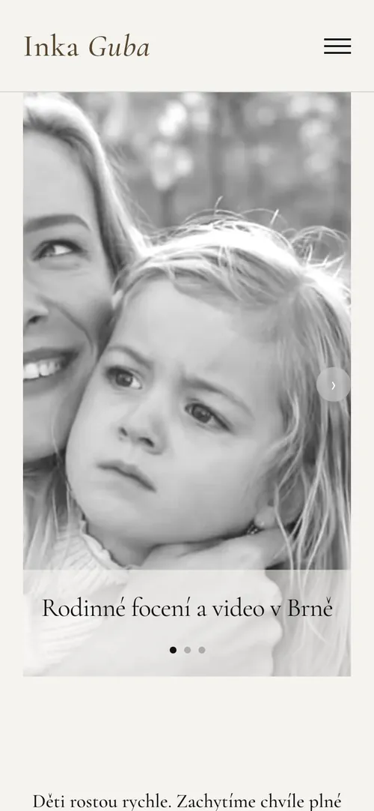
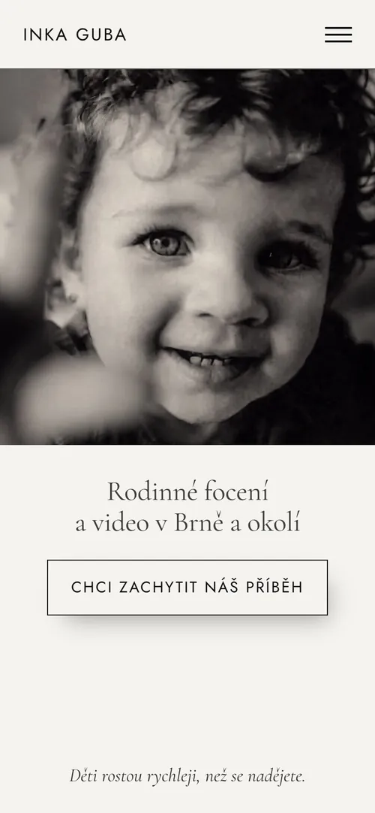
You watch first. Seventeen seconds of real families, in black and white, so nothing distracts from the faces.
Then one sentence beside it: “Kids grow faster than you expect.” It answers a worry parents named in the interviews, before they have read anything else.
Design system
Strict rules, so it feels effortless
Type
Cormorant Garamond
Emotion: headlines and italic accents.
Jost
Everything practical: body, labels, buttons.
Three sizes, no exceptions: 60 / 28 / 16.
Colour & rules
#F5F3EF#111111#59462D- Italic only on words that carry feeling, never on practical headings.
- Dark and light sections alternate, never two dark panels in a row.
- One spacing scale for every section and gap.
- Mobile on one centre axis; motion respects reduced-motion settings.
Final design
Calm, editorial, human
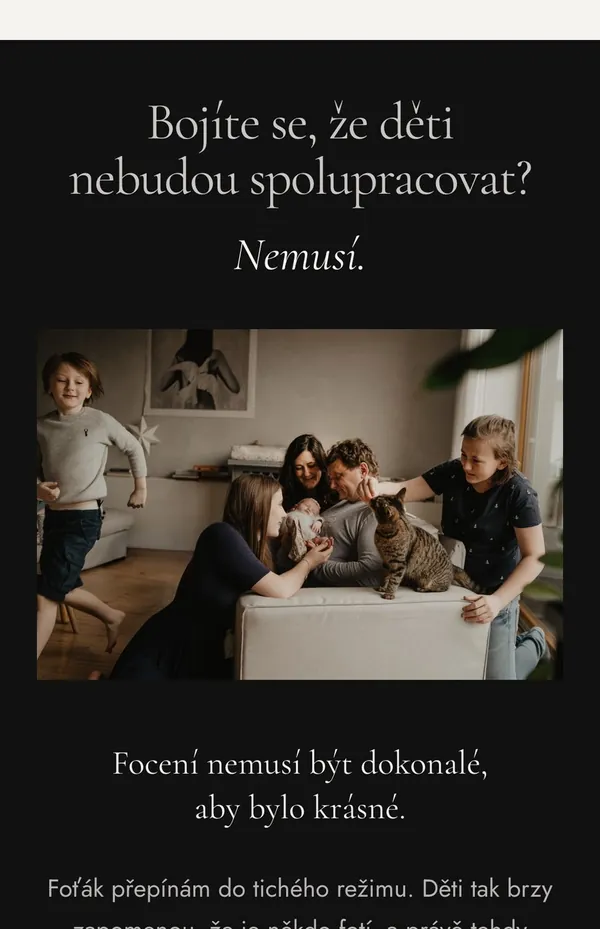
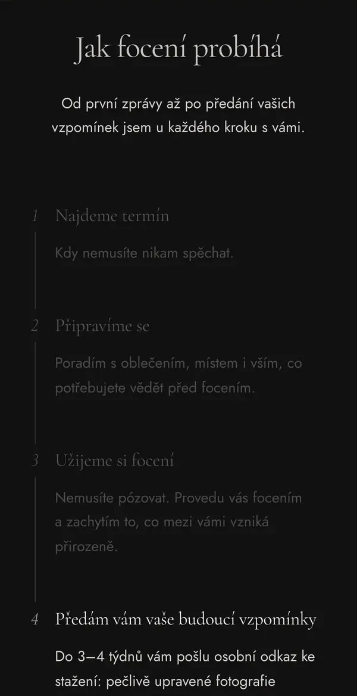
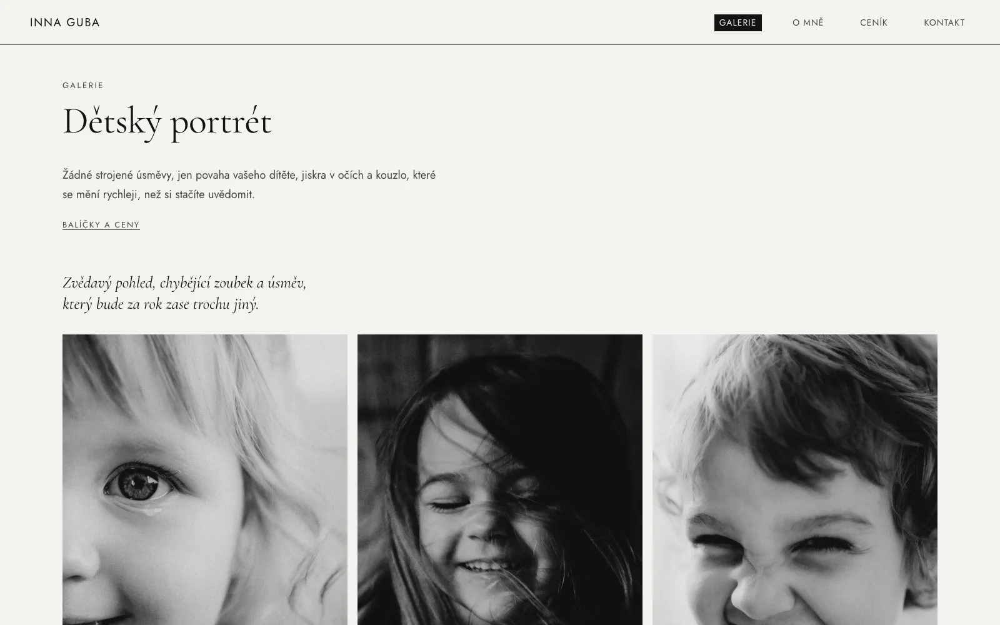
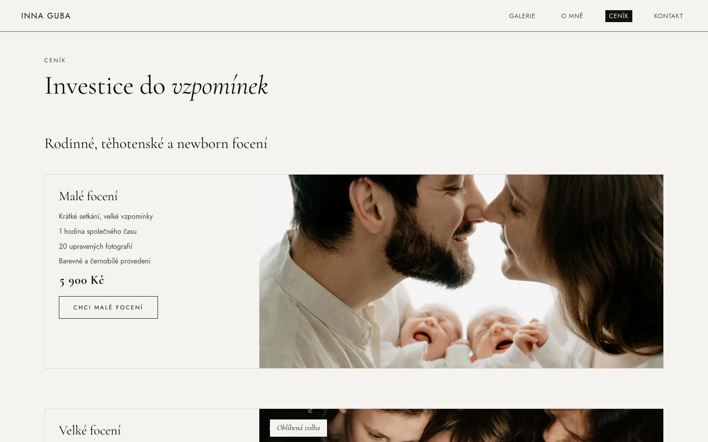
Results
Performance is UX
Parents browse on phones, often on mobile data. After launch I audited the live site: phones now get a 720 px hero video, right-sized WebP images and self-hosted fonts, and video below the fold loads only on scroll.
The site launched in September 2026, so it’s too early to claim conversion results. Analytics and Search Console are set up, and traffic is already noticeably higher than on the old site. I’m tracking enquiries per month, homepage-to-contact conversion and how many parents choose “I need advice”.
Reflection
What I learned
Research changed the message
I expected to sell beauty. Parents needed to hear that it’s safe to be imperfect.
Usable isn’t the same as wanted
Dropping a well-tested booking flow for a conversation was the most important product decision.
Designing in the browser
I made the design decisions; AI-assisted coding let me iterate quickly on real content and real devices.
Next time
Test the high-fidelity design with parents before launch, and set up analytics on the old site first for a clean before/after baseline.